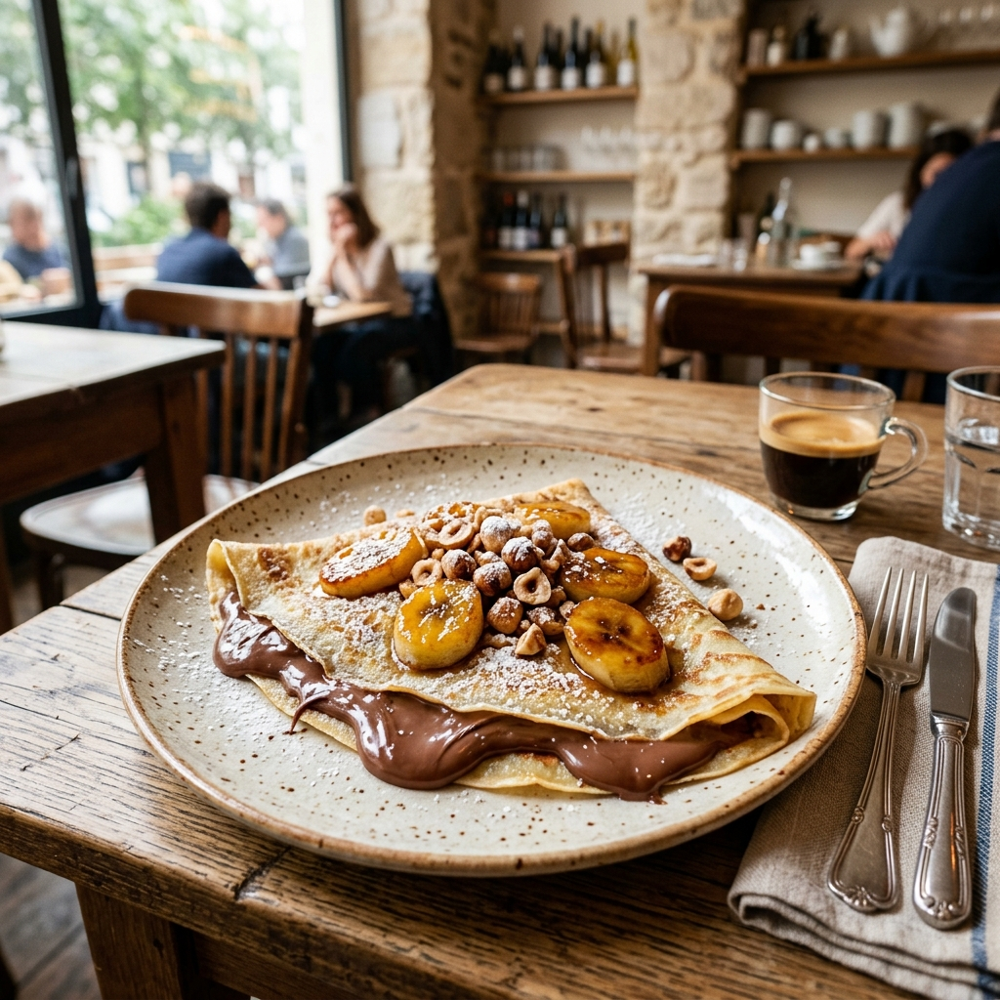
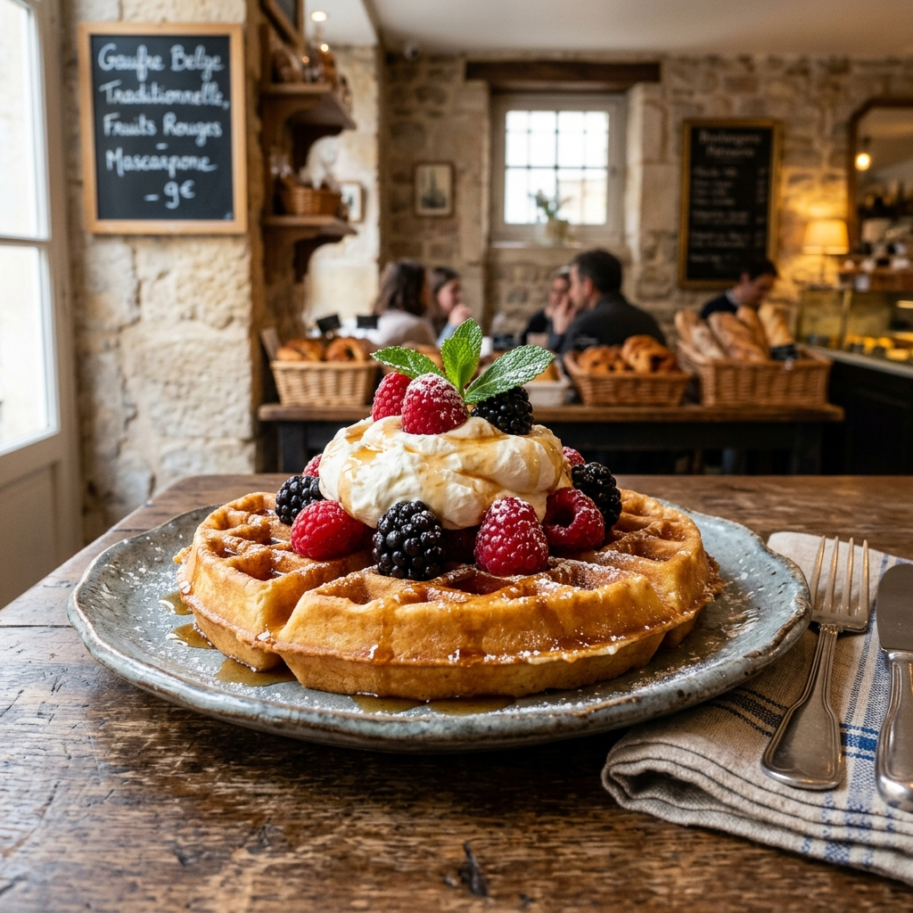
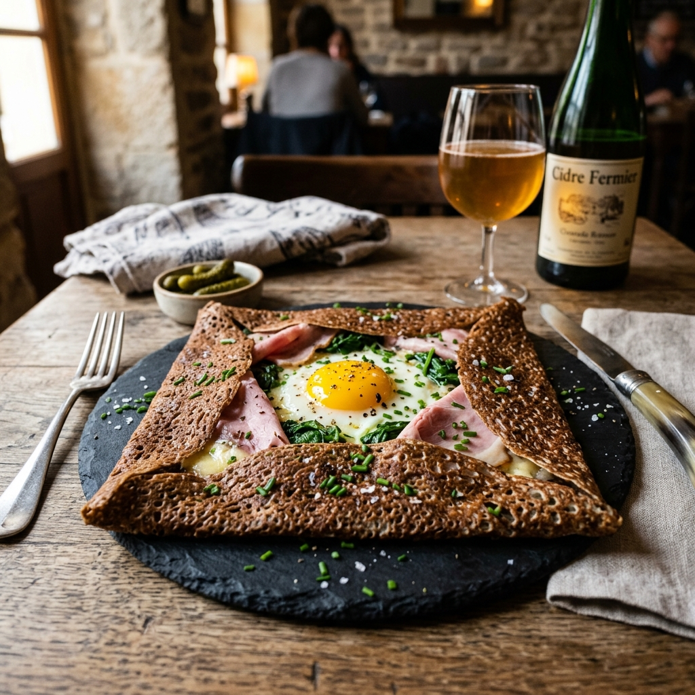
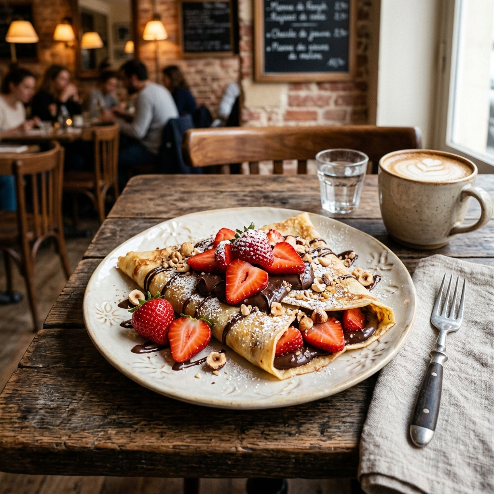
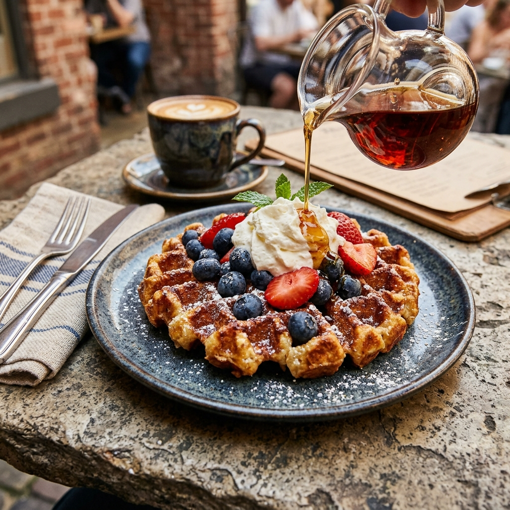
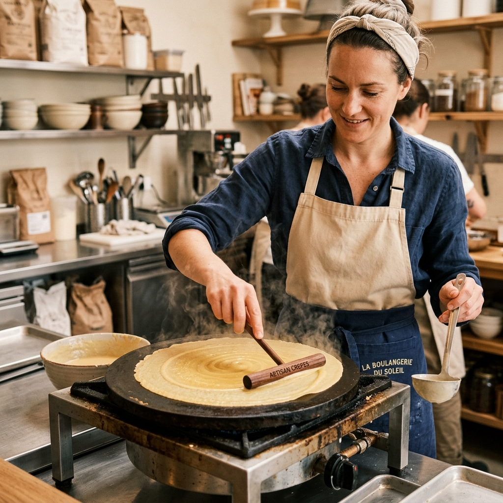
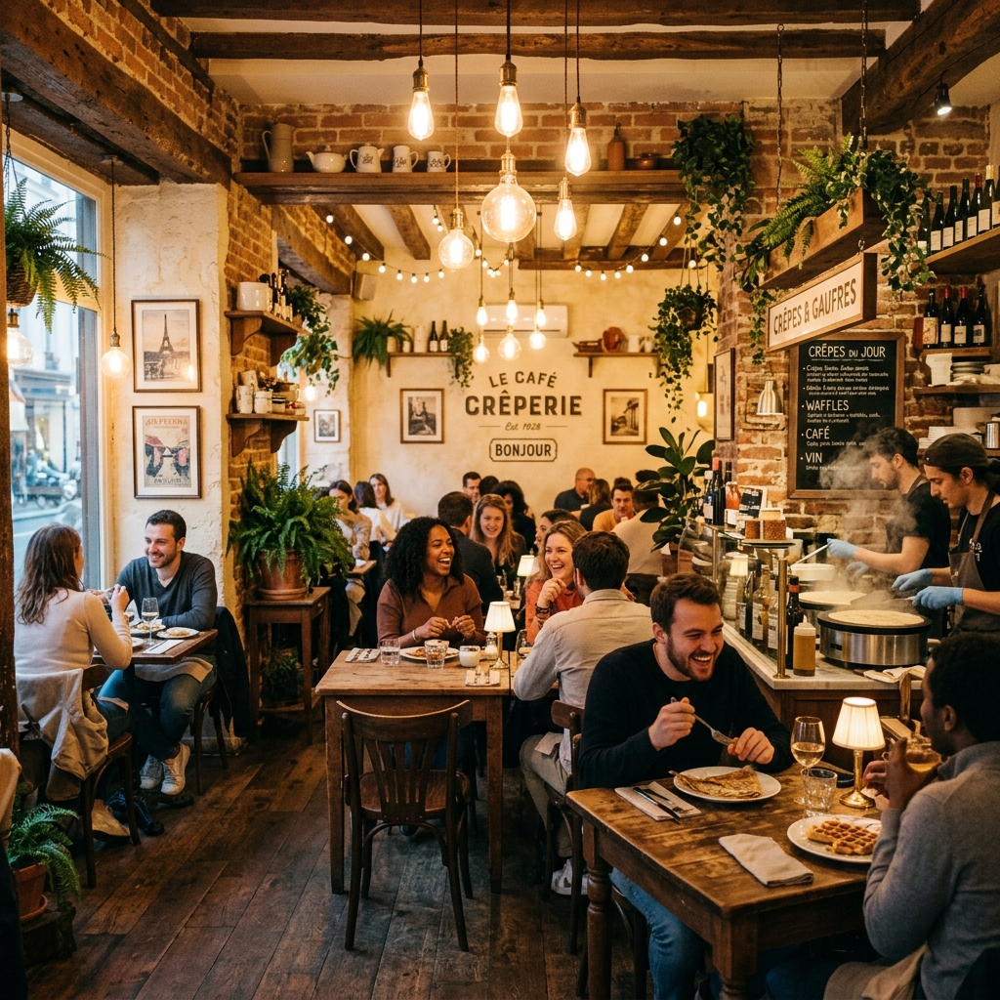
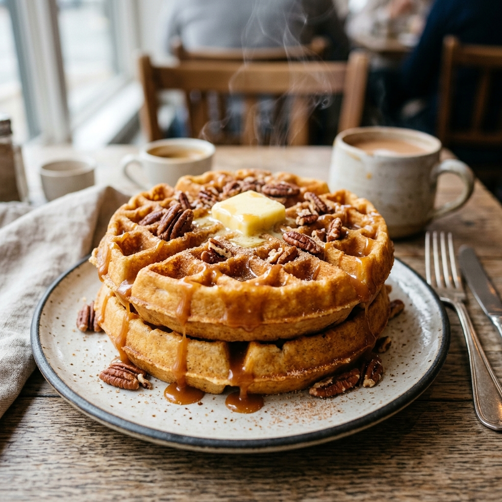
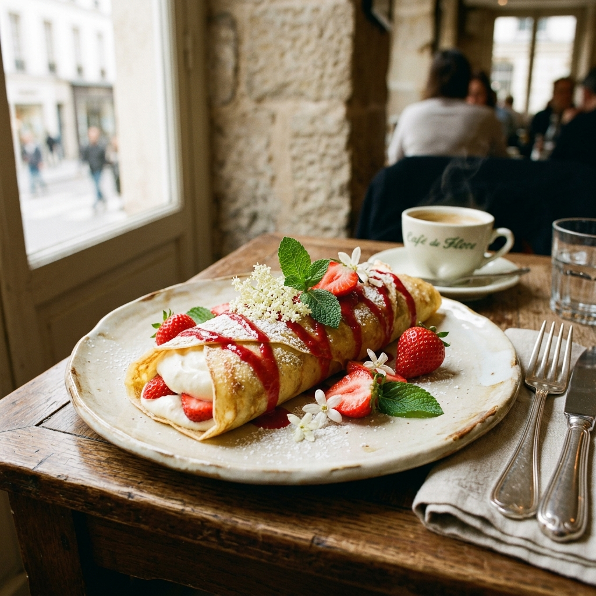

Signature Nutella Crepe
“The Nutella crepe is absolutely divine! The batter is perfectly thin and delicate. My family comes here every single weekend for our brunch ritual.”

Experience the sensory theater of handcrafted French crepes and authentic Belgian waffles — made fresh to order on cast-iron griddles with organic flour, Liege pearl sugar, and pure Madagascar vanilla bean.


Our most popular creations that keep guests coming back for more — each one crafted with care and bursting with flavor.

Silky crepe filled with warm Nutella, caramelized banana slices, and a dusting of powdered sugar.
$12.50 Order Now
Crispy Belgian waffle crowned with fresh strawberries, blueberries, vanilla cream, and maple drizzle.
$14.00 Order Now
Savory buckwheat crepe with smoked ham, gruyère cheese, fresh spinach, and a sunny-side egg.
$13.75 Order Now
Every creation follows a meticulous process that ensures the perfect texture, flavor, and presentation.
We mix our signature batter fresh every morning using organic flour, free-range eggs, and real butter.
Crepes are spread on a traditional French billig; waffles pressed in authentic Belgian cast-iron irons.
We use only fresh seasonal fruits, premium chocolate, artisan cheeses, and house-made sauces.
Each dish is plated with care and served warm, ensuring the perfect indulgent experience.
Handcrafted memories, golden folds, and genuine moments shared by our beloved community.
“The Nutella crepe is absolutely divine! The batter is perfectly thin and delicate. My family comes here every single weekend for our brunch ritual.”
“Best waffles I've ever had — crisp caramelized pearl sugar on the outside, fluffy cloud inside. The caramel pecan waffle is a true masterpiece.”
“They catered our wedding brunch and it was spectacular! Guests still talk about the live crepe station and hospitality. Highly recommend!”
Peek into our kitchen, our café, and the artistry on every plate.






We go beyond just food — we create an experience that delights every sense.
Traditional French and Belgian techniques perfected over generations.
Warm, inviting spaces designed for connection, comfort, and enjoyment.
Full catering for weddings, corporate events, and private gatherings.